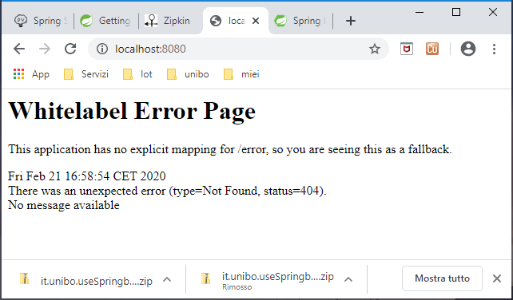
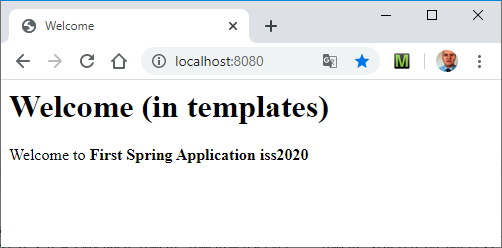

- Connect to https://start.spring.io/
- Select Gradle Project, Java, Group=it.unibo, Artifact=webspring.intro
(Options:Packaging=Jar, Java=8), Dependencies:
- Spring Web: builds the web, including RESTful, applications using Spring MVC. Uses Apache Tomcat as the default embedded container.
- Thymeleaf: a modern server-side Java template engine for both web and standalone environments.
Allows HTML to be correctly displayed in browsers and as static prototypes.
- Spring Boot DevTools: Provides fast application restarts, LiveReload, and configurations for enhanced development experience.
Speeds up this refresh cycle (coding a change, restarting application, and refreshing the browser to view the change).
- Click on Generate
- Unzip the generated file webspring.intro.zip into an empty dir (e.g. C:/xxx)
- Open Eclipse and, in the workspace C:/xxx, do: File->Import -> Gradle -> Existing Gradle Project webspring.intro.
Look at the generated class it.unibo.webspring.intro.Application.java:
package it.unibo.qak.robotwebspring;
import org.springframework.boot.SpringApplication;
import org.springframework.boot.autoconfigure.SpringBootApplication;
@SpringBootApplication
public class Application {
public static void main(String[] args) {
SpringApplication.run(Application.class, args);
}
}
- Run Application.java
- Open a browser on localhost:8080

-
Create the following file webspring.intro\src\main\resources\templates\welcome.html
<html xmlns:th="http://www.thymeleaf.org">
<head><title>Welcome</title></head>
<body>
<h1>Welcome (in templates)</h1>
<p>Welcome to <b><span th:text="${arg}">Our Arg</span></b>.</p>
</body>
</html>
</pre>
-
Insert in webspring.intro\src\main\resources\application.properties the sentence:
spring.application.name=First Spring Application iss2020
-
Create the class it.unibo.webspring.intro.BaseController.java:
package it.unibo.webspring.intro;
import ...
@Controller
public class BaseController {
@Value("${spring.application.name}")
String appName;
@GetMapping("/")
public String homePage(Model model) {
System.out.println("------------------- BaseController homePage " + model );
model.addAttribute("arg", appName);
return "welcome";
}
@ExceptionHandler
public ResponseEntity handle(Exception ex) {
HttpHeaders responseHeaders = new HttpHeaders();
return new ResponseEntity(
"BaseController ERROR " + ex.getMessage(), responseHeaders, HttpStatus.CREATED);
}
}
- Run Application.java
